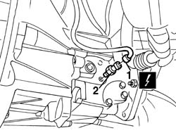

5550D22 REVERSING LIGHT SWITCH - R+R
- Path
- Procedures > 55 ELECTRICAL EQUIPMENT > 5550 WARNING AND MANOEUVRING INDICATORS > 5550D BRAKE AND REVERSING LIGHTS > 5550D22 REVERSING LIGHT SWITCH - R+R
- Kind
- repair procedure (removal / refitting; the operation number is the code)
- Applies to
- all engines; all production periods
- Interactive page
- https://sloeber94.github.io/elrnDB-aGt/en/#/125001700
Applies to: all engines; all production periods
 Removing
Removing
 Refitting
RefittingPlace the vehicle on a lift.
1. Raise the vehicle and disconnect the electrical connection for the reversing light switch.
Name | Connector | |
|---|---|---|
1 | Reversing lights switch | See I20 REVERSING LIGHTS SWITCH |
2. Undo and remove the reversing lights switch.

Applies to: all engines; all production periods
Refitting
RemovingCheck that the switch is not damaged and, if necessary, conduct an electrical test on it.
Tighten the reversing light switch.
Connect the electrical connection for the reversing lights switch.
Remove the vehicle from the lift.
Check the operation of the reversing light.